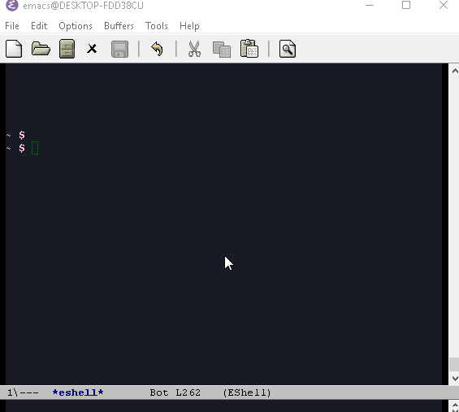

Emacs on Microsoft Windows
Table of Contents
1 Emacs on Microsoft Windows
1.1 Set HOME variable
The HOME environment variable that has the default value /home/<username>) on Linux sets the user's directory path.
This variable, which is equivalent to _%USERPROFILE% _(C:\\Users\<username> )
is expected to be set by many Unix applications ported to Windows and it
also makes directory browser in Emacs and shells easier.
C:\Users\arch>echo %USERPROFILE%
C:\Users\arch
It can be set permanently by using the commmand below on cmd.exe shell.
setx HOME %USERPROFILE%
To test if the variable is set. Open a new cmd.exe shell and type:
C:\Users\arch>echo %HOME%
C:\Users\arch
It allows to browser Windows directories as:
| ~ | C:\Users\arch |
| ~/Desktop | C:\Users\arch\Documents |
| ~/.emacs.d | C:\Users\arch\.emacs.d |
It also allows the commands:
To open file ~/.emac.d/init.el (C:\Users\arch\.emacs.d\init.el)
- C-x C-f find-file ~/.emac.d/init.el
To open directory (C:\Users\arch\Desktop)
- C-x C-d ~/Desktop
1.2 Unix utilities
You can bash install with Chocolately package manager or download GIT version control app that comes bundled with bash and Unix utilities like grep, mv, ssh, df and dd.
Command to run Bash. Usage: M-x run-bash
(defun run-bash () (interactive) (let ((shell-file-name "C:\\Program Files\\Git\\bin\\bash.exe")) (shell "*bash*")))
Command to run cmd.exe. Usage: M-x run-cmdexe
(defun run-cmdexe () (interactive) (let ((shell-file-name "cmd.exe")) (shell "*cmd.exe*")))
1.3 Path Environment Variables
To run Unix utilities and other command lines apps in Emacs add to the PATH system environment variable the path to their directories like this:
(setenv "PATH" (concat ;; "c:/Windows/System32" ";" "c:/Windows/Microsoft.NET/Framework/v4.0.30319" ";" "C:\\Windows\\Microsoft.NET\\Framework\\v4.0.30319" ";" ;; Unix tools "C:\\Program Files\\Git\\usr\\bin" ";" ;; User binary files "C:\\User\\arch\\bin" ";" ;; Mono Installation. "c:\\Program Files\\Mono\\bin" ";" "c:\\Program Files\\Mono\\lib\\mono\\4.5" ";" (getenv "PATH") ))
1.4 Eshell
1.4.1 Overview
Eshell provides many benefits to Windows users:
- Many unix like commands implemented on Emacs' Lisp like: mv, cp, which …
- Completion
- History: C-c C-l
- Easy copy and paste unlike cmd.exe
- Integration with Eamcs since it can run Emacs commands (interactive functions) like shell commands.
1.4.2 Screenshots

1.4.3 Demonstrations
- Commands and history
To open the history type: C-c C-l

- Emacs Integration

Eshell can run Emacs elisp commands (interactive functions) like find-file, dired as ordinary shell commands like is shown above.
The function find-file can be executed in eshell as shell command
find-file ~/.emacs.d/init.el.(find-file "~/.emacs.d/init.el")Some useful Elisp commands on Eshell:
Open file:
- find-file
- find-file-other-window
- find-file-other-frame
Open directory:
- dired
- dired-other-window
- dired-other-frame
- Asyncrhonous Commands
~/Desktop $ notepad.exe &
- Copy command output to clibpoard
Eshell comes with a pseudo clipboard device /dev/kill that is useful to handle clipboard.
Copy command output to clibpboard
~/Desktop $ ipconfig.exe > /dev/kill
Show clibpoard content
- Shell Commands mixed with Emacs commands
Note: split-string Is an Emacs function.
Example 1:
~/Desktop $ split-string $PATH ";" (#("C:/Program Files (x86)/Microsoft SDKs/F#/4.0/Framework/v4.0" 0 59 (escaped t)) #("c:/Windows/System32" 0 19 (escaped t)) #("c:/Windows/Microsoft.NET/Framework/v4.0.30319" 0 45 (escaped t)) #("C:\\Windows\\Microsoft.NET\\Framework\\v4.0.30319" 0 45 (escaped t)) #("C:\\Program Files\\Git\\usr\\bin" 0 28 (escaped t)) #("C:\\User\\arch\\bin" 0 16 (escaped t)) #("c:\\Program Files\\Mono\\bin" 0 25 (escaped t)) #("c:\\Program Files\\Mono\\lib\\mono\\4.5" 0 34 (escaped t)) "") ~/Desktop $
Exmaple 2:
~/Desktop $ for m in {split-string $PATH ";"} {echo $m} C:/Program Files (x86)/Microsoft SDKs/F#/4.0/Framework/v4.0 c:/Windows/System32 c:/Windows/Microsoft.NET/Framework/v4.0.30319 C:\Windows\Microsoft.NET\Framework\v4.0.30319 C:\Program Files\Git\usr\bin C:\User\arch\bin c:\Program Files\Mono\bin c:\Program Files\Mono\lib\mono\4.5 ~/Desktop $
Example 3:
~/Desktop $ for m in $load-path { echo $m} e:/projects/org-wiki ~/.emacs.d/packages c:/Users/arch/.emacs.d/elpa/csharp-mode-20160901.319 c:/Users/arch/.emacs.d/elpa/fsharp-mode-20160719.315 c:/Users/arch/.emacs.d/elpa/flycheck-20160817.321 c:/Users/arch/.emacs.d/elpa/company-quickhelp-20160211.718 c:/Users/arch/.emacs.d/elpa/company-20160730.1516 c:/Users/arch/.emacs.d/elpa/helm-anything-20141126.231 c:/Users/arch/.emacs.d/elpa/anything-20160822.1852 c:/Users/arch/.emacs.d/elpa/helm-20160824.745 ...
1.5 Powershell
This command runs Powershell on Emacs:
(defun run-powershell () "Run powershell" (interactive) (async-shell-command "c:/windows/system32/WindowsPowerShell/v1.0/powershell.exe -Command -" nil nil) )
Usage: M-x run-powershell.